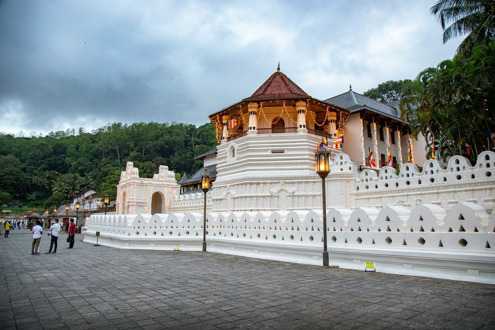
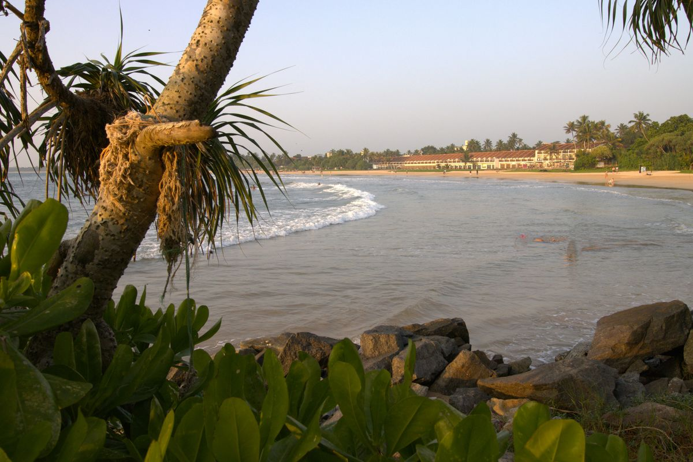

Sri Lanka
Discover the Beauty of Sri Lanka
Tea hills, Kandy's temple, golden beaches
- 4N / 5D
- Travel style: Family
- 4 hotel stays
- Delhi ✈start
- Kandy1N
- Nuwara Eliya1N
- Bentota1N
- Colombo1N
Day by day
-
Arrival at Colombo International Airport
Upon arrival at Colombo International Airport, you will be met by an airport representative and your designated guide. After completing the airport formalities, you will be escorted to your air-conditioned vehicle and proceed towards Kandy.
En Route Visit – Pinnawala Elephant Orphanage
Located approximately 90 km from Colombo on the way to Kandy, Pinnawala Elephant Orphanage is home to numerous rescued and orphaned elephants. It is an enjoyable and memorable experience where visitors can observe these magnificent animals in a natural and carefully managed environment.
Visitors can witness the elephants during their scheduled feeding and bathing sessions. The orphanage is open from 8:30 AM to 5:45 PM.
Feeding Times: 9:15 AM, 1:15 PM & 5:00 PM
Bathing Times: 10:00 AM–12:00 PM & 2:00 PM–4:00 PM
Visit a Spice & Herbal Garden
Sri Lanka is world-renowned for its aromatic spices and traditional healing herbs. Visit a local spice and herbal garden to discover a variety of plants, including sandalwood, cocoa, citronella, almond, jasmine and coconut.
Learn how popular Sri Lankan spices such as cloves, pepper, ginger, nutmeg, cinnamon and saffron are cultivated and used. You will also gain an insight into their traditional medicinal properties and their role in Ayurvedic treatments and everyday life.
Visit the Temple of the Sacred Tooth Relic
Visit Sri Dalada Maligawa (Temple of the Sacred Tooth Relic), one of Sri Lanka's most revered Buddhist sites. Originally built by the Kandyan Kings to house and honor the sacred tooth relic of the Buddha, the temple is renowned for its beautiful architecture, intricate carvings and spiritual significance.
The temple attracts pilgrims from around the world and is an important reason why Kandy is recognized as a UNESCO World Heritage Site.
Optional – Kandy Cultural Show
In the evening, enjoy an optional Kandy Cultural Show, offering a fascinating glimpse into Sri Lanka's traditional arts and culture.
The approximately one-hour performance features vibrant Kandyan dancers, traditional drummers, fire dancers and sword dancers, creating an entertaining showcase of the island's rich cultural heritage.
Hotel Check-In & Relaxation
After sightseeing, proceed to the hotel for check-in and relaxation.
Overnight Stay: Kandy Hotel
-
Breakfast at the hotel.
After breakfast, check out and proceed towards the scenic hill country of Nuwara Eliya.
Visit Sri Bhaktha Hanuman Temple & Ramboda Falls
Visit Sri Bhaktha Hanuman Temple, located in the picturesque Ramboda region. According to local Ramayana legends, this area is associated with Lord Hanuman's search for Sitadevi.
The temple houses a large granite statue of Lord Hanuman and is an important pilgrimage site for visitors following the Ramayana trail in Sri Lanka.
Continue to Ramboda Falls, one of the beautiful waterfalls located amidst Sri Lanka's lush central highlands.
Tea Factory & Plantation Visit
Discover the fascinating world of Sri Lankan tea production.
Visit a tea plantation to learn how tea is cultivated and harvested, followed by a tour of a tea factory where you can observe the traditional processes of plucking, withering, rolling, oxidizing and drying.
The experience is completed with an opportunity to taste some of the finest varieties of locally produced Ceylon Tea.
Visit Seetha Amman Temple
Visit Seetha Amman Temple, an important site associated with the Ramayana trail. According to local legend, this is the place where Sitadevi stayed during her captivity in Ashok Vatika.
The temple is situated beside a stream where Sita is believed to have bathed. The site is also associated with Lord Hanuman, and visitors can see rock formations believed to resemble his footprints.
The temple is dedicated to Lord Rama, Sitadevi, Lakshmana and Lord Hanuman.
Explore Nuwara Eliya City
Proceed to Nuwara Eliya, often referred to as Little England because of its colonial architecture and cool, pleasant climate.
Explore the charming streets lined with colonial-style cottages, villas and historic buildings. Visit the iconic old red-brick post office and enjoy a relaxing walk through Victoria Park.
You may also enjoy the scenic surroundings of Lake Gregory.
Hotel Check-In & Relaxation
Proceed to the hotel for check-in and relaxation.
Overnight Stay: Nuwara Eliya Hotel
-
Breakfast at the hotel.
After breakfast, check out and proceed towards the beautiful coastal town of Bentota.
Visit Kosgoda Sea Turtle Conservation Project
Visit the Kosgoda Sea Turtle Conservation Project, established to help protect endangered sea turtles and conserve their nesting grounds.
The project focuses on creating awareness about sea turtle conservation and protecting these magnificent creatures from various threats.
Visit the hatchery, where rescued and collected turtle eggs are carefully protected until they hatch. The young hatchlings are then released into the sea, giving them a better chance of survival during the early stages of their lives.
Balapitiya – Madu River Boat Safari
Continue to Balapitiya for an exciting Madu River Boat Safari.
Enjoy a relaxing cruise through the scenic waterways surrounded by lush mangrove forests and numerous small islands. During the safari, you may observe local village life, traditional fishing methods and cinnamon cultivation.
The area is also home to a variety of bird species, including several aquatic birds, as well as beautiful water lilies and colorful butterflies.
Depending on the route and local conditions, the experience may also include visits to a small temple and demonstrations of traditional coir and rope-making techniques.
Hotel Check-In & Relaxation
After the boat safari, proceed to the hotel for check-in and relaxation.
Overnight Stay: Bentota Hotel
-
Breakfast at the hotel.
After breakfast, check out and proceed towards Colombo, the commercial capital of Sri Lanka.
Colombo City Tour
Explore the vibrant city of Colombo with a sightseeing tour covering its major landmarks and historic areas.
Drive through the city's busy commercial districts and the elegant, tree-lined Cinnamon Gardens. Visit Colombo Fort, the former British administrative center and military garrison.
Continue to Pettah, one of Colombo's busiest commercial and bazaar areas, including Sea Street, traditionally known for its goldsmiths.
Visit the historic Wolvendaal Church, dating back to 1749, and admire its Dutch colonial architecture.
The tour also includes BMICH, the replica of the Avukana Buddha statue and Independence Square.
Evening – Shopping in Colombo
Enjoy an evening of shopping and leisure in Colombo.
Visit Galle Face Green, a popular seaside promenade and one of the city's largest open spaces, where locals and visitors gather to enjoy the oceanfront atmosphere.
Continue shopping at some of Colombo's popular shopping destinations, offering everything from clothing and handicrafts to souvenirs and Sri Lankan specialties.
Suggested shopping stops include:
- Odel
- House of Fashion
- Cotton Collection
- Beverly Street
- Pettah Market
- Noritake Showroom
- Barefoot
- Laksala
- One Galle Face
- Colombo City Centre
Hotel Check-In & Relaxation
Proceed to the hotel for check-in and relaxation.
Overnight Stay: Colombo Hotel
-
Breakfast at the hotel.
After breakfast, check out from the hotel and proceed to Colombo International Airport for your departure flight back home.
Approximate Travel Time: 1 hour
Depart Sri Lanka with wonderful memories of your journey through the island's cultural heritage, scenic hill country, wildlife, beaches and vibrant cities.
END OF TOUR
Where you'll stay
- Rivendell Grand Hotel, Kandy or Similar
- Queensbury Hotel, Nuwara Eliya or Similar
- Rathna Beach Hotel, Waskaduwa or Similar
- Berjaya Hotel, Colombo or Similar
What's included
Included
- Complimentary 500ml X 02 Mineral Water Bottle – per person per day throughout the tour.
- Complimentary honeymoon amenities (Bed Decoration, Fruit Platter OR Cake) at any one of the following hotels above.
- A complimentary King Coconut refreshment.
- Complimentary Spice Garden Visit on the way to Kandy.
- Airport rep will be available for your assistance 24 hours / 7 days.
- Meeting and Assistance at the Airport.
- Above-mentioned hotels / similar on HB Basis. (04 Breakfasts + 04 Dinners)
- Transport in an A/C Vehicle with the service of an English-Speaking Chauffeur Guide.
- Sightseeing as mentioned above. (Without entrance fees)
- All Taxes.
Not included
- All Entrance Fees
- Early check-in & late checkout.
- Camera & video permits
- Any expenses of a personal nature.
- Any other expenses not mentioned above.
- Tips & porterage.
Price
- Base Price
- ₹40,000
- Taxes & Fees
- ₹2,000
- Discount Applied
- −₹1,000
Total₹41,000per person
Dates, hotels and days can all be changed. Tell us what you'd like and we'll send your final quote on WhatsApp.